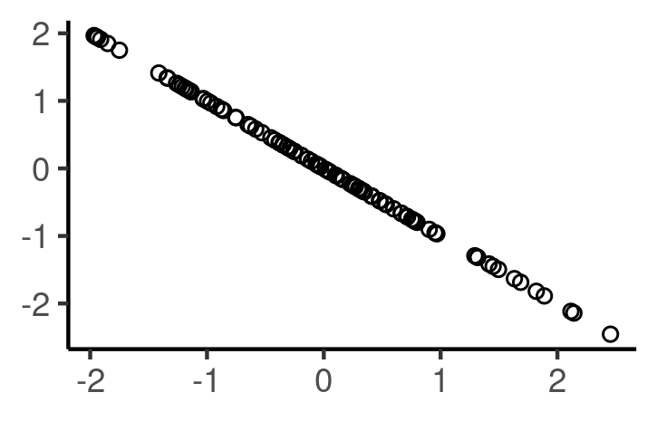
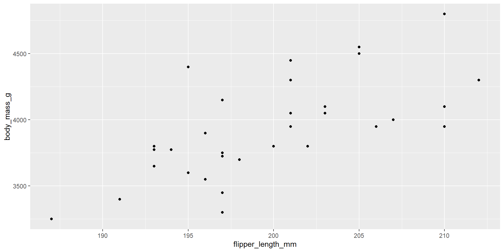

# Option 1
penguin_sub %>%
select(flipper_length_mm, body_mass_g) %>%
cor()
# Option 2
penguin_sub %>%
summarize(cor = cor(flipper_length_mm, body_mass_g) )
# Option 3
cor(penguins$flipper_length_mm, penguins$body_mass_g)Regression
Chapter 5.0 - 5.1
Today’s goals
- Find the correlation between two variables
- Build and interpret a linear regression model
- Make predictions using a linear regression model
- Plot the line of best fit on a scatterplot
Artwork by @allison_horst
A Note about Regression
Remember that, BEFORE building a model, you should conduct an exploratory data analysis.
. . .
You will almost certainly need to do some data wrangling and visualizations before the model analysis.
. . .
For this lessons example we will be using a subset of the penguins dataset that only includes male penguins from the Chinstrap species and Dream island. This is stored in penguin_sub.
Correlation Coefficient (Ex1)

Correlation coefficient: a number between -1 and 1 indicating the strength of the linear relationship between two numerical variables.
Match the following graphs with the most appropriate correlation coefficient:
- a) -0.2 b) 0 c) 0.4 d) 0.7

Correlation Coefficient (Ex2)

Match the following graph with the most appropriate correlation coefficient:
- a) -1 b) -0.75 c) -0.9 d) 1

Correlation Coefficient (Ex3)

Match the following graph with the most appropriate correlation coefficient:
Amount of gas in a car vs distance traveled .
a . Exactly -1
b . Between -1 and 0
c . About 0
d . Between 0 and 1
e . Exactly 1
Correlation Coefficient (continued)
The following code shows three different options for calculating the correlation between two variables within the penguins dataset.
penguin_sub <- penguins %>%
filter(sex == "male", species == "Chinstrap", island == "Dream") %>%
mutate(id = seq(1:34))
glimpse(penguin_sub)Rows: 34
Columns: 9
$ species <fct> Chinstrap, Chinstrap, Chinstrap, Chinstrap, Chinstra…
$ island <fct> Dream, Dream, Dream, Dream, Dream, Dream, Dream, Dre…
$ bill_length_mm <dbl> 50.0, 51.3, 52.7, 51.3, 51.3, 51.7, 52.0, 50.5, 50.3…
$ bill_depth_mm <dbl> 19.5, 19.2, 19.8, 18.2, 19.9, 20.3, 18.1, 19.6, 20.0…
$ flipper_length_mm <int> 196, 193, 197, 197, 198, 194, 201, 201, 197, 195, 19…
$ body_mass_g <int> 3900, 3650, 3725, 3750, 3700, 3775, 4050, 4050, 3300…
$ sex <fct> male, male, male, male, male, male, male, male, male…
$ year <int> 2007, 2007, 2007, 2007, 2007, 2007, 2007, 2007, 2007…
$ id <int> 1, 2, 3, 4, 5, 6, 7, 8, 9, 10, 11, 12, 13, 14, 15, 1… You will most likely need to filter out missing data beforehand OR set use = "complete.obs" inside the cor() function. This is the equivalent of when we set na.rm = TRUE in other summary functions.
Simple Linear Regression (SLR)
- Definition: Simple linear regression: models the relationship between a response (y) variable and one explanatory (x) variable.
. . .
- Essentially, we are finding the line of best fit for a scatterplot between ‘x’ and ‘y’.
SLR (continued)
Equation of a regression line: \[\hat{y} = b_0 + b_1*x\]
\(b_0\) : intercept; the expected value of \(\hat{y}\) when \(x = 0\)
\(b_1\) : slope; for every 1 unit increase in x, then \(\hat{y}\) increases on average by \(b_1\)
fitted values: \(\hat{y}\); the predicted value on the regression line
residuals: \(y - \hat{y}\); error in prediction
Example 1: Model
Consider a subset of the penguins dataset that only includes male penguins from the Chinstrap species and Dream island. This is stored in penguin_sub.
. . .
Predict a penguin’s body_mass_g using flipper_length_mm.
#Build a model
model_penguin <- lm(body_mass_g ~ flipper_length_mm, data = penguin_sub)penguin_sub <- penguins %>%
filter(sex == "male", species == "Chinstrap", island == "Dream")%>%
mutate(id = seq(1:34))
glimpse(penguin_sub)Rows: 34
Columns: 9
$ species <fct> Chinstrap, Chinstrap, Chinstrap, Chinstrap, Chinstra…
$ island <fct> Dream, Dream, Dream, Dream, Dream, Dream, Dream, Dre…
$ bill_length_mm <dbl> 50.0, 51.3, 52.7, 51.3, 51.3, 51.7, 52.0, 50.5, 50.3…
$ bill_depth_mm <dbl> 19.5, 19.2, 19.8, 18.2, 19.9, 20.3, 18.1, 19.6, 20.0…
$ flipper_length_mm <int> 196, 193, 197, 197, 198, 194, 201, 201, 197, 195, 19…
$ body_mass_g <int> 3900, 3650, 3725, 3750, 3700, 3775, 4050, 4050, 3300…
$ sex <fct> male, male, male, male, male, male, male, male, male…
$ year <int> 2007, 2007, 2007, 2007, 2007, 2007, 2007, 2007, 2007…
$ id <int> 1, 2, 3, 4, 5, 6, 7, 8, 9, 10, 11, 12, 13, 14, 15, 1…Example 1: Model
Consider a subset of the penguins dataset that only includes male penguins from the Chinstrap species and Dream island. This is stored in penguin_sub.
Predict a penguin’s body_mass_g using flipper_length_mm.
#Build a model
model_penguin <- lm(body_mass_g ~ flipper_length_mm, data = penguin_sub)
#Summarize the model
summary(model_penguin)
Call:
lm(formula = body_mass_g ~ flipper_length_mm, data = penguin_sub)
Residuals:
Min 1Q Median 3Q Max
-521.72 -177.33 -23.06 117.51 658.82
Coefficients:
Estimate Std. Error t value Pr(>|t|)
(Intercept) -4111.348 1600.726 -2.568 0.0151 *
flipper_length_mm 40.269 8.004 5.031 1.81e-05 ***
---
Signif. codes: 0 '***' 0.001 '**' 0.01 '*' 0.05 '.' 0.1 ' ' 1
Residual standard error: 274.8 on 32 degrees of freedom
Multiple R-squared: 0.4417, Adjusted R-squared: 0.4242
F-statistic: 25.31 on 1 and 32 DF, p-value: 1.814e-05penguin_sub <- penguins %>%
filter(sex == "male", species == "Chinstrap", island == "Dream") %>%
mutate(id = seq(1:34))
glimpse(penguin_sub)Rows: 34
Columns: 9
$ species <fct> Chinstrap, Chinstrap, Chinstrap, Chinstrap, Chinstra…
$ island <fct> Dream, Dream, Dream, Dream, Dream, Dream, Dream, Dre…
$ bill_length_mm <dbl> 50.0, 51.3, 52.7, 51.3, 51.3, 51.7, 52.0, 50.5, 50.3…
$ bill_depth_mm <dbl> 19.5, 19.2, 19.8, 18.2, 19.9, 20.3, 18.1, 19.6, 20.0…
$ flipper_length_mm <int> 196, 193, 197, 197, 198, 194, 201, 201, 197, 195, 19…
$ body_mass_g <int> 3900, 3650, 3725, 3750, 3700, 3775, 4050, 4050, 3300…
$ sex <fct> male, male, male, male, male, male, male, male, male…
$ year <int> 2007, 2007, 2007, 2007, 2007, 2007, 2007, 2007, 2007…
$ id <int> 1, 2, 3, 4, 5, 6, 7, 8, 9, 10, 11, 12, 13, 14, 15, 1…Example 1: Plot regression line
# Plot relationship of variables
ggplot(penguin_sub, aes(x = flipper_length_mm, y = body_mass_g))+
geom_point()
summary(model_penguin)$coefficients Estimate Std. Error t value Pr(>|t|)
(Intercept) -4111.34753 1600.725516 -2.568428 1.508617e-02
flipper_length_mm 40.26936 8.003689 5.031349 1.814086e-05Example 1: Plot regression line
summary(model_penguin)$coefficients Estimate Std. Error t value Pr(>|t|)
(Intercept) -4111.34753 1600.725516 -2.568428 1.508617e-02
flipper_length_mm 40.26936 8.003689 5.031349 1.814086e-05Example 1: Residuals
Predict a penguin’s body_mass_g using flipper_length_mm.
penguin_sub <- penguin_sub %>%
mutate(fitted = fitted(model_penguin),
residuals = residuals(model_penguin))
glimpse(penguin_sub)Rows: 34
Columns: 11
$ species <fct> Chinstrap, Chinstrap, Chinstrap, Chinstrap, Chinstra…
$ island <fct> Dream, Dream, Dream, Dream, Dream, Dream, Dream, Dre…
$ bill_length_mm <dbl> 50.0, 51.3, 52.7, 51.3, 51.3, 51.7, 52.0, 50.5, 50.3…
$ bill_depth_mm <dbl> 19.5, 19.2, 19.8, 18.2, 19.9, 20.3, 18.1, 19.6, 20.0…
$ flipper_length_mm <int> 196, 193, 197, 197, 198, 194, 201, 201, 197, 195, 19…
$ body_mass_g <int> 3900, 3650, 3725, 3750, 3700, 3775, 4050, 4050, 3300…
$ sex <fct> male, male, male, male, male, male, male, male, male…
$ year <int> 2007, 2007, 2007, 2007, 2007, 2007, 2007, 2007, 2007…
$ id <int> 1, 2, 3, 4, 5, 6, 7, 8, 9, 10, 11, 12, 13, 14, 15, 1…
$ fitted <dbl> 3781.446, 3660.638, 3821.716, 3821.716, 3861.985, 37…
$ residuals <dbl> 118.55366, -10.63827, -96.71570, -71.71570, -161.985…Example 1: Predicting

Recall the equation of the regression line is
\[\widehat{\hbox{body_mass_g} } = -4111.3 + 40.3*\hbox{flipper_length}\]
You find a new male penguin from the Chinstrap species and Dream island that has a flipper length of 220 mm. What do you predict his weight to be in grams?
```{r}
-4111.3 + 40.3*220
```[1] 4754.7